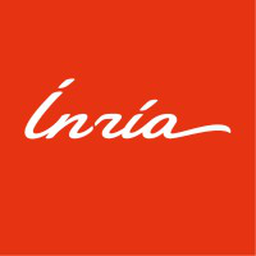

Inria
Machine Learning Engineer
- Designed SEA-Net, a small, inherently interpretable network for time-series classification (Separable TCN + Top-k Conjunction Pooling).
- Versus MILLET: 90.2% fewer parameters, 91% fewer FLOPs, and 94% vs 89% accuracy on webtraffic. Paper submitted to ICLR.
- Tuned with Optuna and MLflow, trained on Grid'5000 GPUs; built SEA-Net Studio (FastAPI + React) to explain predictions in plain English.
- Technical lead for 3 M1 students (Université de Lille) on a room-overcrowding alert: fine-tuned YOLO for labels; CNN → TCN raised accuracy 72% → 92%.
I built SEA-Net, a tiny time-series model that shows which seconds of the signal drove each prediction: 90% fewer parameters than the MILLET baseline and better accuracy (94% vs 89% on WebTraffic). Paper submitted to ICLR.
- Picked hyperparameters with Optuna, tracked everything in MLflow and trained on Grid'5000 GPUs. Some runs took 10–20 hours, so I set up tmux + a Telegram bot to ping my phone when each dataset finished. Lid closed, life continued.
- Turned it into SEA-Net Studio ↗, a live demo (ONNX + FastAPI + React) where an LLM explains each prediction in plain English.
- Technical lead for 3 first-year Master's (M1) students from Université de Lille, building a room-overcrowding alert (CO₂, temperature, door sensor, camera). I fine-tuned YOLO to label the data, helped switch the model from a CNN to a TCN (72% → 92%), and compared it on CPU vs a microcontroller. Real teamwork, and I loved it.
Not very technical? Start with my Medium article “Every Second Counts” ↗. It tells the idea like a story.
Computer Vision Intern (Co-Researcher), Spiking Vision Transformers
- Co-designed HP-STAtten attention for Spiking Transformers: 96.10% CIFAR-10, 81.75% CIFAR-10-DVS, above published baselines.
- Built a first spiking-neuron version of VCA; ablations with Optuna and MLflow (PyTorch, SpikingJelly); extending to ImageNet.
Co-designed HP-STAtten (Hybrid-Precision Spatio-Temporal Attention) for spiking vision transformers, and beat published spiking-transformer baselines: about 96.10% on CIFAR-10 (HP-STAtten-binary) and 81.75% on CIFAR-10-DVS (HP-STAtten-hybrid).
- Built a first spiking-neuron version of VCA, plus a classical attention path based on similarity instead of difference. As far as we know, among the first implementations like this.
- Ran lots of ablations with Optuna and MLflow on Grid'5000 (PyTorch, SpikingJelly).
- Now extending the work to ImageNet.